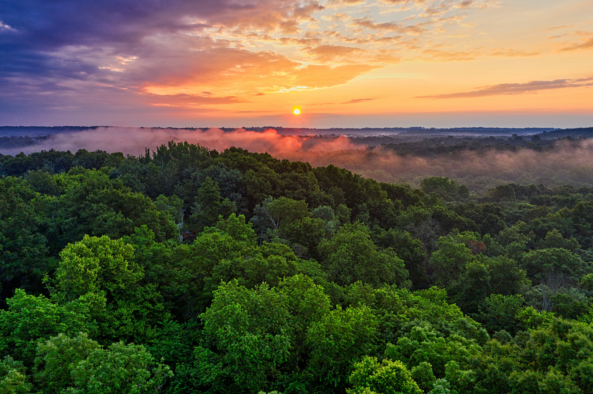
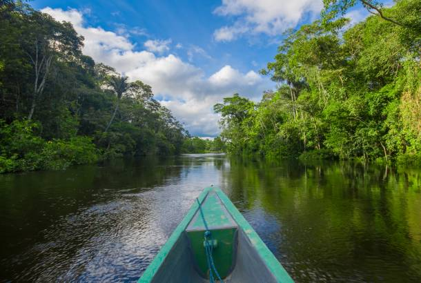

The Amazon rainforest,[a] also called Amazon jungle or Amazonia, is a moist broadleaf tropical rainforest in the Amazon biome that covers most of the Amazon basin of South America. This basin encompasses 7,000,000 km2 (2,700,000 sq mi),[2] of which 5,500,000 km2 (2,100,000 sq mi) are covered by the rainforest. This region includes territory belonging to nine nations and 3,344 formally acknowledged indigenous territories. The majority of the forest, 60%, is in Brazil, followed by Peru with 13%, Colombia with 10%, and with minor amounts in Bolivia, Ecuador, French Guiana, Guyana, Suriname, and Venezuela. Four nations have "Amazonas" as the name of one of their first-level administrative regions, and France uses the name "Guiana Amazonian Park" for French Guiana's protected rainforest area. The Amazon represents over half of Earth's remaining rainforests,[3] and comprises the largest and most biodiverse tract of tropical rainforest in the world, with an estimated 390 billion individual trees in about 16,000 species.[4] More than 30 million people of 350 different ethnic groups live in the Amazon, which are subdivided into 9 different national political systems and 3,344 formally acknowledged indigenous territories. Indigenous peoples make up 9% of the total population, and 60 of the groups remain largely isolated.[5] Large scale deforestation is occurring in the forest, creating different harmful effects. Economic losses due to deforestation in Brazil could be approximately 7 times higher in comparison to the cost of all commodities produced through deforestation. In 2023, the World Bank published a report proposing a non-deforestation based economic program in the region.[6][7]

If you're planning to visit the Amazon Rainforest, it's essential to prepare thoroughly for a unique and sometimes challenging travel experience. Here are some general tips to consider:
1.Research and Plan:
- Research the specific region of the Amazon you want to visit, as the rainforest spans multiple countries.
- Plan your itinerary, considering factors like transportation, accommodation, and activities.
2.Vaccinations and Health Precautions:
- Check with your healthcare provider for necessary vaccinations and health precautions.
- Consider taking malaria prophylaxis and carry mosquito repellent.
3.Travel Insurance:
- Purchase comprehensive travel insurance that covers medical emergencies, trip cancellations, and other unforeseen events.
4.Local Guides:
- Hire local guides who are knowledgeable about the flora, fauna, and local customs.
- They can enhance your experience and help navigate the challenging terrain.
5.Packing Essentials:
- Pack lightweight, breathable clothing suitable for a humid and tropical climate.
- Include sturdy, comfortable hiking shoes, a rain jacket, a hat, and sunscreen.
- Don't forget essentials like a water bottle, insect repellent, and a basic first aid kit.
6.Respect Nature and Wildlife:
- Follow Leave No Trace principles and adhere to local regulations to minimize your impact on the environment.
- Respect wildlife from a safe distance and avoid disrupting their natural behavior.
7.Learn Basic Local Phrases:
- Familiarize yourself with basic phrases in the local language to communicate with locals.
- This can enhance your cultural experience and make interactions more enjoyable.
8.Stay Hydrated:
- The Amazon can be hot and humid, so it's crucial to stay hydrated. Drink plenty of water, especially if engaging in physical activities.
9.Safety Precautions:
- Be aware of potential hazards such as wildlife encounters, river currents, and navigation challenges.
- Follow safety guidelines provided by guides and tour operators.
10.Responsible Tourism:
- Choose eco-friendly and responsible tour operators committed to sustainable tourism practices.
- Contribute to local communities by purchasing handmade crafts or supporting local businesses.
11.Weather Considerations:
- Be prepared for sudden changes in weather. Rain is common in the rainforest, so waterproof gear is advisable.
12.Photography Tips:
- Bring a camera with a good zoom lens to capture wildlife from a safe distance.
- Respect the guidelines for photography in ecologically sensitive areas.
Before finalizing your travel plans, always check the latest travel advisories, entry requirements, and any specific regulations for the country or region you plan to visit in the Amazon Rainforest. Each country may have its own guidelines and regulations for visitors to the rainforest.